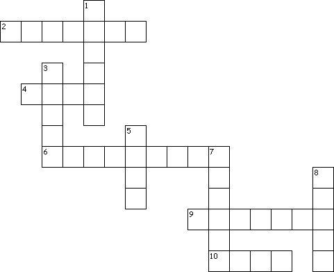
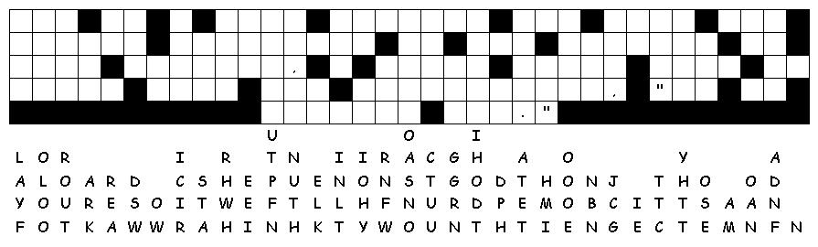

This week's lessons: Acts 17:22-31, Psalm 66:8-20, 1 Peter 3:13-22, John 14:15-21
This
week's lessons: Acts
17:22-31, Psalm
66:8-20, 1
Peter 3:13-22, John
14:15-21
Elementary School Pew-work
Fill in the blanks with these words: Holy disciples Spirit Jesus world Father love
____________ said to his ____________: If you love me, you will do as I command. Then I will ask the Father to send you the ____________ Spirit who will help you and always be with you. The ____________will show you what is true. The people of this world cannot accept the Spirit, because they don't see or know him. But you know the Spirit, who is with you and will keep on living in you. I won't leave you like orphans. I will come back to you. In a little while the people of this ____________ won't be able to see me, but you will see me. And because I live, you will live. Then you will know that I am one with the ____________. You will know that you are one with me, and I am one with you. If you ____________ me, you will do what I have said, and my Father will love you. I will also love you and show you what I am like.
1. What did Jesus promise the Holy Spirit would bring?
_________________________________________________________________________________
2. Why will we have eternal life?
_________________________________________________________________________________
3. Whom does God the Father love?
_________________________________________________________________________________
Questions taken from Sunday School Lessons; http://www.sundayschoollessons.com/baplord.htm
|
 |
Across 2. instruction or order 4. feel deep commitment 6. students or followers 9. children with no parents 10. not false Down 1. God, the first person of the Trinity 3. what God created 5. Christ came, so that we might do this 7. God, the third person of the Trinity 8. God, the Son |
Next week: Acts 1:6-14, Psalm 68:1-10, 32-35, 1 Peter 4:12-14, 5:6-11, John 17:1-11
This
week's lessons: Acts
17:22-31, Psalm
66:8-20, 1
Peter 3:13-22, John
14:15-21
Middle-School Pew-work
|
22Then Paul stood in the midst of Mars' hill, and said, Ye men of Athens, I perceive that in all things ye are too superstitious. 23For as I passed by, and beheld your devotions, I found an altar with this inscription, TO THE UNKNOWN GOD. Whom therefore ye ignorantly worship, him declare I unto you. 24God that made the world and all things therein, seeing that he is Lord of heaven and earth, dwelleth not in temples made with hands; |
25Neither is worshipped with men's hands, as though he needed any thing, seeing he giveth to all life, and breath, and all things; 26And hath made of one blood all nations of men for to dwell on all the face of the earth, and hath determined the times before appointed, and the bounds of their habitation; 27That they should seek the Lord, if haply they might feel after him, and find him, though he be not far from every one of us: 28For in him we live, and move, and have our being; as certain also of your own poets have said, For we are also his offspring. |
29Forasmuch then as we are the offspring of God, we ought not to think that the Godhead is like unto gold, or silver, or stone, graven by art and man's device. 30And the times of this ignorance God winked at; but now commandeth all men every where to repent: 31Because he hath appointed a day, in the which he will judge the world in righteousness by that man whom he hath ordained; whereof he hath given assurance unto all men, in that he hath raised him from the dead. |
The Athenians believed that the gods were representations of “art and imagination”. How is this understanding of God right or wrong?”__________________________________________________ _________________________________________________________________________________ _________________________________________________________________________________ _________________________________________________________________________________
What beliefs do your schoolmates and peers have about God?________________________________ _________________________________________________________________________________ _________________________________________________________________________________ _________________________________________________________________________________ _________________________________________________________________________________
How can you respect their beliefs, without being false to your own beliefs?_____________________ _________________________________________________________________________________ _________________________________________________________________________________ _________________________________________________________________________________ _________________________________________________________________________________ _________________________________________________________________________________

Created
by Puzzlemaker
at DiscoverySchool.com
Next week: Acts 1:6-14, Psalm 68:1-10, 32-35, 1 Peter 4:12-14, 5:6-11, John 17:1-11